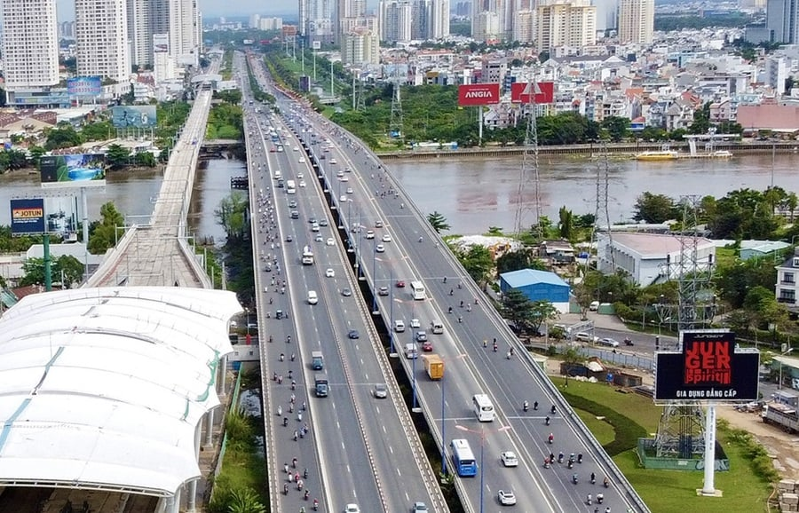

Tên khác: Newport Bridge / Cầu Tân Cảng
| Tên chính thức | Cầu Sài Gòn |
|---|---|
| Tên nhân dân | Cầu Tân Cảng (trước năm 1975) |
| Vị trí | nối phường Thạnh Mỹ Tây với phường An Khánh, Thành phố Hồ Chí Minh |
| Qua sông | Sông Sài Gòn |
| Chiều dài | 986,12 m |
| Chiều rộng | 24 m |
| Loại kiến trúc | Cầu bê tông cốt thép |
| Đơn vị thiết kế | Johnson Drake and Piper (hợp tác thiết kế) |
| Năm Thi công | 1958 |
| Năm hoàn thành | 1961 |
| Tổng đầu tư | Chưa có số chính thức rõ ràng trong tài liệu công khai |
Cầu Sài Gòn là một trong những cây cầu đầu tiên bắc qua sông Sài Gòn, đóng vai trò là cửa ngõ phía Đông của TP.HCM, kết nối trung tâm với vùng đô thị mới. Cầu giúp phát triển giao thông, giảm tải cho phà cũ và thúc đẩy kinh tế đô thị.
Cầu được khai thông vào ngày 28/6/1961 trước chiến tranh, sau đó là điểm chiến lược trong các thời kỳ quan trọng của lịch sử Việt Nam.

Cầu Sài Gòn qua sông Sài Gòn
Video quay thực tế Cầu Sài Gòn — được lấy từ YouTube
Nếu video không hiển thị, xem tại: YouTube – Video Cầu Sài Gòn
| Tên cầu | Chiều dài | Năm hoàn thành | Loại |
|---|---|---|---|
| Cầu Sài Gòn | 1010 m | 1961 | Bê tông cốt thép |
| Cầu Phú Mỹ | 2100 m | 2009 | Cầu dây văng |
| Cầu Bình Khánh (đang xây) | 2763.5 m | 2025 (dự kiến) | Cầu dây văng |
So sánh cho thấy Cầu Sài Gòn là cây cầu có tuổi đời lâu nhất và đóng vai trò “đặt nền” cho nhiều dự án sau này.